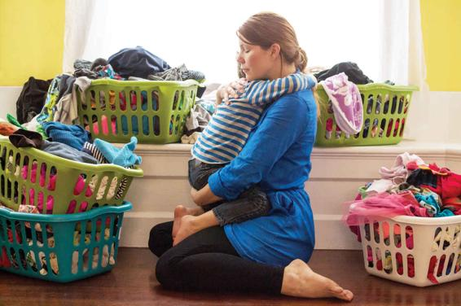

The functionalist perspective sees society as a set of social institutions that perform specific functions to ensure continuity and consensus. According to this perspective, families perform important tasks that contribute to society’s basic needs and help perpetuate social order. Sociologists in the functionalist tradition regard the nuclear family as fulfilling specialized roles in modern societies. With the advent of industrialization in the late nineteenth century, families became less important as a unit of economic production and more focused on bearing, rearing, and socializing children.
According to U.S. sociologist Talcott Parsons, the two main functions of families are primary socialization and personality stabilization (Parsons and Bales, 1955). Primary socialization is the process by which children learn their society’s cultural norms and expectations for behavior. Because this process happens during early childhood, the family is the most important site for the development of the human personality. Personality stabilization refers to the role of the family in assisting adult family members emotionally. Marriage between two adults is the arrangement through which personalities are supported and kept healthy. In industrial societies, families may play a critical role in stabilizing adult personalities because the nuclear family is often geographically distant from its extended kin and cannot draw on larger kinship ties.
Functionalist theories emphasize how the family helps meet society’s needs and maintain order. Functionalism viewed a strict division of labor—with men in an instrumental role and women in an affective role—as rational and functional for society.
Parsons regarded the nuclear family as best equipped to handle the demands of industrial society. In the “conventional” family, one adult can work outside the home for pay while the second adult cares for the home and children. In practical terms, this specialization of roles has historically meant the husband adopts the “instrumental” role as breadwinner and the wife assumes the “affective,” or emotional support, role in the home.
Today, Parsons’s view of families seems inadequate and outdated. Functionalist theories of families have come under heavy criticism for justifying the domestic division of labor between men and women as something natural and unproblematic. Moreover, functionalist perspectives presume that a male-female married couple is essential for the successful rearing of children and the efficient operation of households; Parsons failed to consider that same-sex and single-parent families may run efficiently and effectively parent and socialize their children. He also failed to recognize that in many families, wives may be better suited to breadwinning and their husbands better suited to childrearing, or that the two would share both tasks equally. Many of these critiques are similar to those that sociologist Judith Stacey levied against conservative sociologist David Popenoe. Yet Parsons’ theories are more understandable when we consider the broader historical backdrop. The immediate post–World War II years (when Parsons proposed his theories) saw men reassuming positions as sole breadwinners after returning from the war overseas; this arrangement was rational for the family because men typically earned far more than women (Becker, 2009). Because women were no longer needed in the labor force in large numbers, they returned to their traditional roles of wives, mothers, and homemakers after having worked in offices, factories, shipyards, and stores during the war when the men were away.
Assessing Parsons’s view in light of contemporary society, however, we can criticize functionalist views on other grounds. In emphasizing the importance of the family, such theories neglect the role of other social institutions—such as government, media, peers, and schools—in socializing children. The theories also neglect family forms that do not reflect the nuclear family. Families that did not conform to the White, suburban, middle-class ideal were considered deviant, including same-sex, child-free, and single-parent families, as well as families in which husbands were not primary breadwinners.
Symbolic Interactionist Approaches
Symbolic interactionist approaches to studying the family stand in stark contrast with functionalist perspectives. Whereas functionalist approaches emphasize stability and maintaining the current social order, symbolic interactionism emphasizes the contextual, subjective, and even ephemeral nature of family interactions, power relations, and interpersonal communication (LaRossa and Reitzes, 1993). Sociologist Ernest Burgess (1926) was one of the earliest scholars to apply symbolic interactionist approaches to the family, which he described as “a unity of interacting personalities” in which the behavior or identities of individual family members mutually shaped one another over time.
Symbolic interactionist approaches do not take power differentials for granted, and they do not necessarily assume that men have more power than women or that adults have more power than children. For example, Willard Waller (1938) developed the principle of least interest to show that the partner who is least committed to, or interested in, their romantic relationship has more power and might often exploit that power. Think about some of the couples you know; your friend might be an independent and assertive person, but if he or she is very intent on making a relationship work with a partner who is slightly less excited about the relationship, your friend might cede the upper hand to the partner in an effort to keep the relationship going.
More contemporary work emphasizes the ways that family members continually negotiate, define, and redefine their roles. Recall from Chapter 10 the concept of “doing gender” (West and Zimmerman, 1987). In this view, the ways that men and women behave are neither biological nor static; rather, these roles are socially constructed based on the immediate social context. Marriage and romantic relationships are a particularly important site of doing gender. Studies have explored the ways that couples negotiate housework and how they “do gender,” even when no longer performing the household tasks typically associated with their sex. Emslie and colleagues (2009) studied the ways that colorectal cancer patients “did gender” when their illness prevented them from carrying out the gender-typed household roles they previously performed. The couples developed narratives to maintain their gendered identities, where women organized “cover” for housework and child care when they were ill, and men focused on making sure that their families were financially secure and spouses were “protected” from the stress of the men’s cancer battles. “Doing gender” is not limited to different-sex married couples, however. In his study of same-sex couples, Christopher Carrington (1999) found that men in same-sex couples often “covered up” their role in serving nightly meals, as a way to reinforce their masculinity, whereas female partners claimed responsibility for meals, and in doing so reinforced their appearance of femininity.
Symbolic interactionist approaches have been applied to parent-child relationships as well. Whereas scholarship on functionalist traditions took a “top down” approach to socialization and presumed that parents taught and socialized their children, symbolic interactionist studies find that children often shape, influence, and guide their parents in particular social situations. Several recent studies of immigrant and refugee families, for instance, show that parents and children often must renegotiate their roles when they inhabit unfamiliar contexts (Katz, 2014). Children may have relatively higher status than their parents, especially if they have a better understanding of the language and practices in the United States. This knowledge allows them to serve as the family’s liaison to schoolteachers and health care providers.
Symbolic interactionist scholars offer provocative insights into family dynamics, but this perspective is critiqued on the grounds that it places too much emphasis on cooperation and consensus. Other critics find that the perspective is overly descriptive; it tells us what is happening, but it does not tell us why. Finally, some scholars, especially those working in the feminist tradition, find fault with the perspective’s lack of explicit attention to social structure and deeply embedded gender differences in social and interpersonal power.
Feminist Approaches
For most people, families provide solace, practical support, comfort, love and companionship. Yet families can also be sites of exploitation, loneliness, and profound inequality. In this regard, feminism has challenged the vision of families as harmonious and protective. In 1963, the American feminist Betty Friedan wrote in The Feminine Mystique of “the problem with no name”—the isolation and boredom of many suburban American housewives trapped in an endless cycle of child care and housework. Other writers followed, exploring the phenomenon of the “captive wife” (Gavron, 1966) and the damaging effects of “suffocating” family settings on interpersonal relationships (Laing, 1971).
During the 1970s and 1980s, feminist perspectives dominated debates and research on families. Where, previously, family sociology had focused on family structures, the historical development of the nuclear and extended family, and the importance of kinship ties, feminism directed attention inside family dynamics to examine women’s experiences in the domestic sphere. Many feminist writers questioned the vision of families as cooperative units based on common interests and mutual support, arguing instead that unequal power relationships within families meant that certain family members benefited more than others (Ferree, 2010).
Feminist approaches to understanding families focus on a broad range of topics, yet three are particularly important. The first is the division of household labor—the way in which tasks are allocated, where women often specialize in homemaking and child rearing and men specialize in breadwinning. Feminists disagree about the historical emergence of this division. Some see it as an outcome of industrial capitalism, where factory work would take men out of the home to work for pay (unlike earlier agricultural economies) and women would be left to manage the home front. Others link it to patriarchy and thus see it as predating industrialization. Although a domestic division of labor probably did exist before industrialization, capitalist production caused a sharper distinction between the domestic and work realms. This process resulted in the crystallization of “male spheres” and “female spheres” and the power relationships that persist today. Some have argued that the gendered allocation of household roles also is a byproduct of economic factors; men’s earnings historically have outpaced women’s, so the opportunity costs—or family wages lost—are lower when women reduce or abandon paid work for unpaid household labor (Stratton, 2012). Until recently, the male breadwinner model has been widespread in most industrialized societies.
Feminist sociologists have studied the way men and women share domestic tasks, such as child care and housework. They have investigated the validity of claims such as that of the “symmetrical family” (Young and Willmott, 1973)—the belief that, over historical time, family roles and responsibilities are becoming more egalitarian. Findings have shown that women still bear the main responsibility for domestic tasks and enjoy less leisure time than men, even though more women are working in paid employment outside the home than before (Bianchi et al., 2012). Data from the 2016 American Time Use Study showed that, on an average day, 21 percent of men did housework, such as cleaning or doing laundry, compared with 50 percent of women. Not only are men less likely to do housework, but when they do, they spend less time doing it, only about 30 percent as much time on average as women in 2016 (U.S. Bureau of Labor Statistics [BLS], 2017a). Interestingly, in same-sex couples, partners tend to share housework more equally than do heterosexual couples, revealing the complex ways that gender shapes household arrangements (Goldberg, Smith, and Perry-Jenkin, 2012).
A second theme is the unequal power relationships within many families, especially the phenomenon of domestic violence, including intimate partner violence. Spousal abuse, marital rape, incest, and the sexual victimization of children have all received more public attention as a result of feminists’ claims that the violent and abusive sides of family life have long been ignored in both academic contexts and legal and policy circles. Feminist sociologists consider how the family serves as an arena for gender oppression and physical abuse. For example, through much of U.S. history, a husband had the legal right to engage his wife in coerced or forced sex. For most of the twentieth century, marital rape was considered an exemption to rape laws, although the exemption was repealed in all states as of 1993. Yet, a dozen states still maintain laws that handle marital rape in quite different ways from rape outside of marriage. Depending on the state, marital rape might be charged under a different section of the criminal code, restricted to a shorter reporting period, and held up to different standards and definitions of force and coercion; assailants are even given slightly different punishments (Byrne, 2015).
Sociologists today are interested in transformations in family forms, including the rise in remarriage and emergence of blended families such as the Trumps.
Carework constitutes a third theme that feminists address. This broad realm encompasses a variety of processes, from attending to a family member who is ill to looking after an older relative over a long period. Sometimes caregiving means simply being attuned to someone else’s psychological well-being. Not only do women shoulder concrete tasks such as cleaning and child care, but they also invest significant emotional labor in maintaining personal relationships (Pinquart and Sorensen, 2006). While caring activities may be grounded in love and deep emotion, they also require an ability and willingness to listen, perceive, negotiate, and act creatively. Caring activities often involve long spells of unpaid labor, and these responsibilities often limit women’s ability to work for pay outside the home. In these ways, caregiving indirectly contributes to women’s relative economic disadvantage in society. Research shows persuasively that women’s economic disadvantage relative to men, especially among older adults, is due in part to their tendency to cut back on paid work when caring for their families, thus reducing the pensions that they are entitled to in old age (Harrington, Meyer, and Herd, 2007). Critiques of feminist theory emphasize that the focus on gender draws attention away from social-class influences, race differences, and other important sources of intersectionality.
Table 15.1APPLYING SOCIOLOGY TO FAMILIES
CONCEPT
APPROACH TO UNDERSTANDING FAMILIES
CONTEMPORARY APPLICATION
Functionalism
Social institutions like families perform specific functions to ensure continuity and stability.
Conservative scholar David Popenoe’s argument that families function best when husband works for pay and wives raise and socialize children.
Symbolic Interactionism
Family relationships are contextual, subjective, and continually renegotiated.
Spouses develop narratives to maintain their gendered identities, even when illness prevents them from carrying out household tasks historically associated with one’s gender.
Feminist Theories
Families are distinguished by unequal power relationships, such that some family members benefit more than others.
Because women historically earn less than men, they are often burdened with emotion- and time-intensive unpaid caregiving labor in the home.
Contemporary Perspectives in the Sociology of Families
Recent theoretical and empirical studies conducted from a feminist perspective have generated increased interest in the family among both academics and the general population. Terms such as the second shift—referring to women’s dual roles at work and at home—have entered our vocabulary. But because feminist studies often focused on issues within the domestic realm, they did not always address trends and influences outside the home.
Since the 1990s, an important body of sociological literature on the family has emerged that draws on feminist perspectives but is not strictly informed by them. Of primary concern are the larger transformations in family forms—the formation and dissolution of families and households and the evolving expectations within personal relationships. The rise in divorce and single parenting, the emergence of “reconstituted families” (i.e., remarriages), same-sex families, the popularity of cohabitation and child-free families, and the diverse and dynamic nature of the households in which children are raised are all topics of inquiry.
In the years following the recession of the early 2000s, scholars have intensified their focus on shifting gender roles within families, where men’s and women’s “traditional” roles have converged or even crossed over. As the recession disproportionately struck “male” industries such as finance and manufacturing, an increasing number of households now have breadwinner wives and dads who either stay at home with children or juggle part-time work with child-rearing (Livingston, 2018). However, attitudes lag far behind. A 2017 national survey found that 71 percent of adults said it’s “very important” for men to be able to support their families financially to be considered good partners. By contrast, only 32 percent of respondents believed the same about women (Parker and Stepler, 2017).